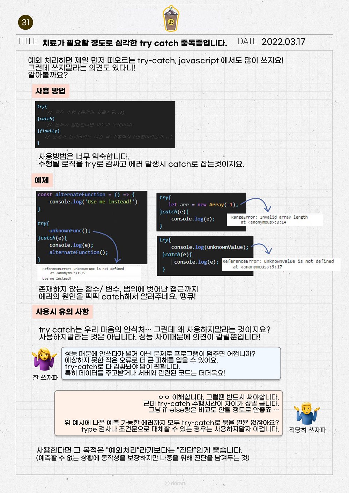
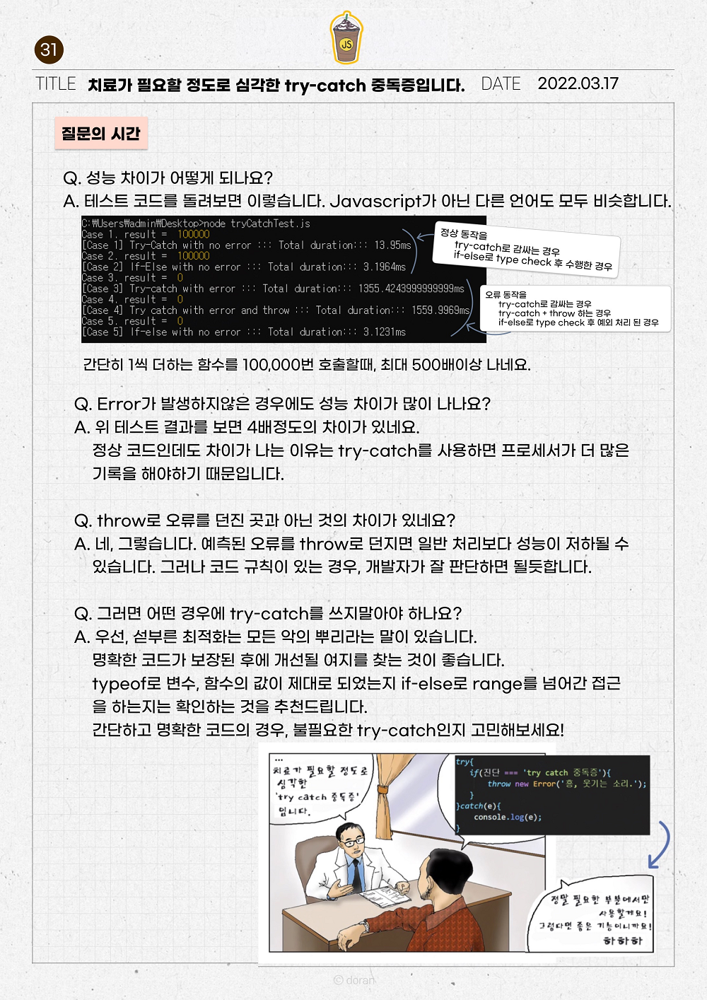

Introduction
01. 전역변수는 왜 나쁠까?
02. 자바스크립트 Scope 이해하기
03. var 대신 let만 쓰라구요? 왜요?
04. 클로저가 도대체 뭘까?
05. 동일 연산자 제대로 쓰기
06. 함수를 정의하는 두가지 방법
07. delete, 언제 쓰는게 좋을까?
08. String, 헤쳐모여!
09. 두 날짜가 며칠 차이?
10. 보기 좋은 Backtick 쓰기도 좋다.
11. Default Parameter
12. JS 주소값 활용법
13. 원시타입과 참조타입
14. 조건문, 멈춰!
15. 생성자 이해하기
16. 호이! 호이스팅이란?
17. 잠시만요! 형 바꾸고 가실게요~
18. Define the "undefined"
19. 아직도 for만 쓰니?
20. 잡았다 요돔(DOM)!
21. 이벤트 전달 : 너가 왜 동작해?
22. includes() : String탐색
23. Prototype : 너의 원형은..?!
24. Prototype 선언 방법, 뉴크셋
25. 오랜만이야 Closure
26. for in loop로 객체 들여다보기
27. Make it! 다차원 배열
28. ☆뽀나쓰☆ Tip of Console
29. 객체.. 또 객체?
30. 상속者들
31. 치료가 필요한 정도로 심각한 'try-catch' 중독증입니다.
Published with GitBook
31. 치료가 필요한 정도로 심각한 'try-catch' 중독증입니다.
"치료가 필요한 정도로 심각한 'try-catch' 중독증입니다"
 
KEYWORDS
try catch, finally, if else